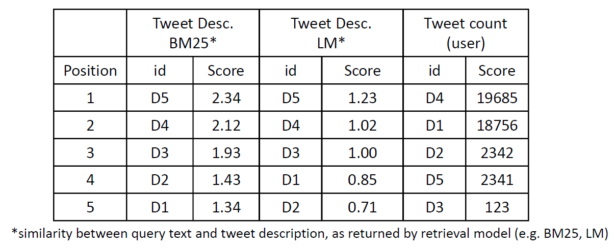
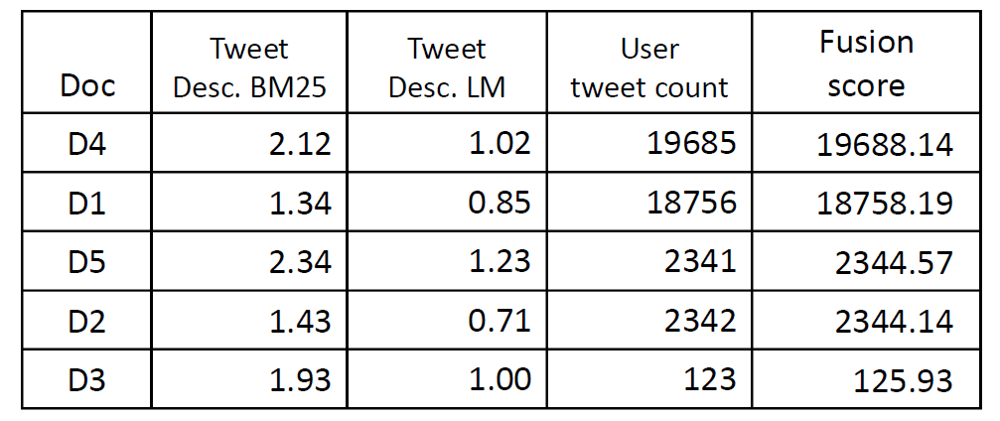
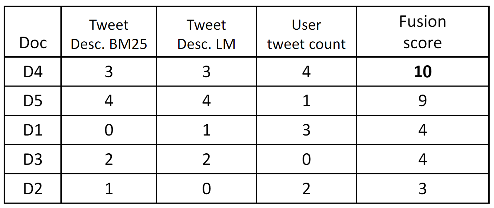
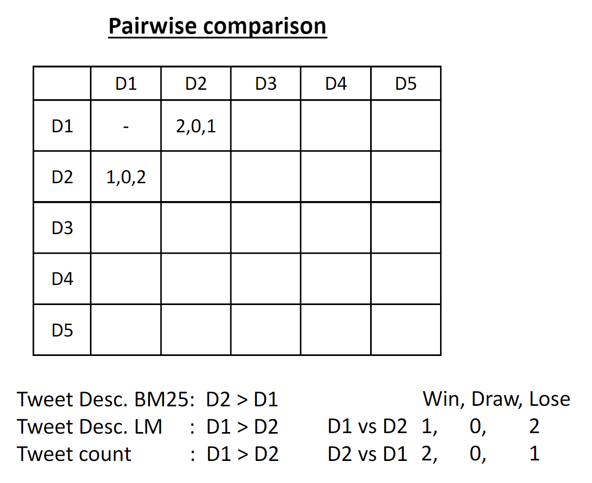
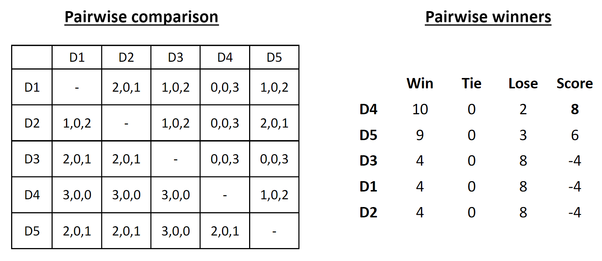
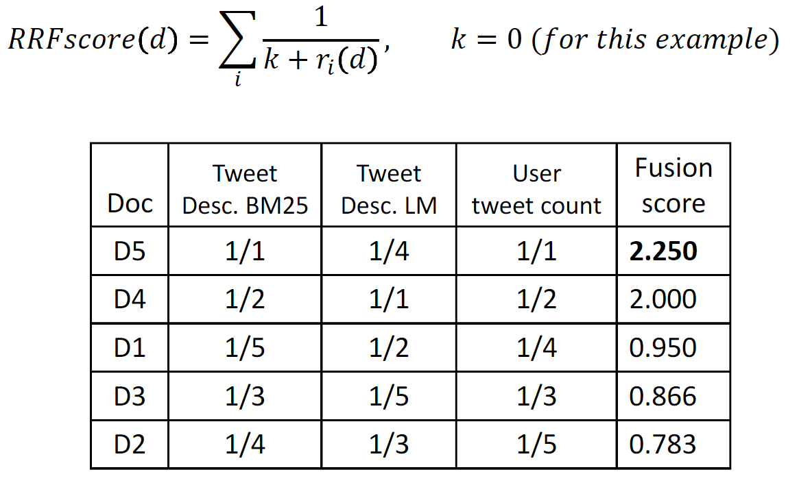
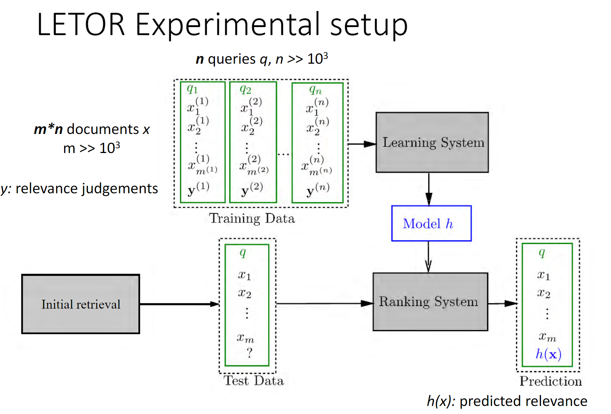
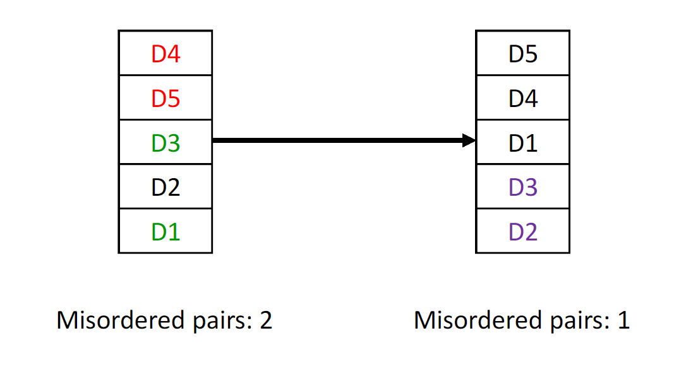
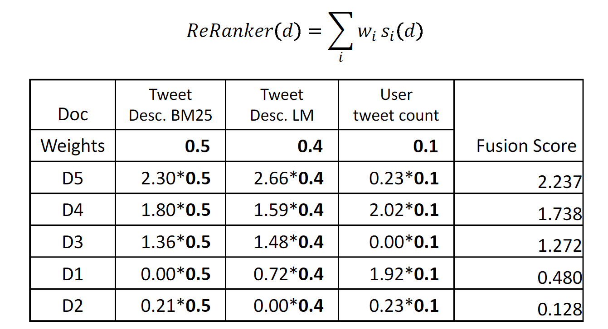

Learn to rank
在信息检索中, 检索rank可以由多种算法获得, 或者是检索的结果还可以受外部信息所影响.将这些信息融合起来排名可能会获得更好的排序结果.
如:

我们可以看到有不同的排序结果.将这多组数据进行在排序.在这 我们将得分 以$s_i(d)$表示, $i$ 为rank. d- document, $r_i(d)$
无监督的reranking方法
Score-based methods
Comb*
CombSUM 例子:

我们也可以将数据归一化之后再进行SUM操作.直接Comb的方式过于简单,我们很容易想到将不同的rank赋予不同的权重.
那么如何来确定这些权重呢.?
Bordafuse
混合排名将每种排名分数加起来. 即就纯粹根据各种算法的排名来打分.如图:
- Condorect
根据各种算法战胜其他算法的次数进行排名.

 Reciprocal Rank Fusion(RRF)
根据排名的倒数作为其文档的权重.k 作为参数可以调节.
Learning to Rank

使用机器学习的方式自动学习到如何rank.逐点的方式.
对相关分数进行回归，将文档分类为“相关”和“非相关”
以$(q, d, r)$ 三元数据集合进行训练.出模型.通过$q,d$ 预测 $s$- 逐对的方式.
给定两个文档，预测部分排名
通过预测部分排名来查找全局的顺序:
 - 逐列的方式.
给出两个相同项目的排名列表，哪个更好.- 考虑许多排名特征.
- 排名模型是加权线性模型.
- 线性模型优化最终排名的顺序.
- 参考 · André Mourão, João Magalhães